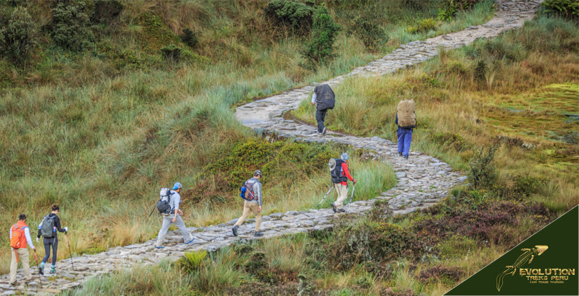

<main>
    <section class="adventure-content">
        <h1>Adventure Travel</h1>
        <p>Explore thrilling experiences and conquer new challenges.</p>
        
        <article class="adventure-post">
            <h2>Hiking the Inca Trail in Peru</h2>
            
            <p>Embarking on the Inca Trail was a journey of a lifetime. The ancient ruins, breathtaking landscapes, and the sense of accomplishment at Machu Picchu were beyond words.</p>
            <a href="inca.jpg">Read More</a>
        </article>

        <article class="adventure-post">
            <h2>Rock Climbing in Joshua Tree National Park</h2>
            
            <p>Scaling the rugged cliffs of Joshua Tree was an adrenaline-pumping experience. The stark beauty of the desert landscape provided an awe-inspiring backdrop.</p>
            <a href="JoshuaTrees_LMcAfee.jpg">Read More</a>
        </article>
        <article class="adventure-post">
            <h2>White-Water Rafting on the Colorado River</h2>
            
            <p>Navigating the rapids of the Colorado River was a heart-pounding adventure. The rush of the water and the towering canyon walls created an unforgettable journey.</p>
            <a href="colorad_river_story.jpg">Read More</a>
        </article>
        <footer>
            <div class="social-icons">
                <a href="#" class="facebook"><i class="fab fa-facebook"></i></a>
                <a href="#" class="twitter"><i class="fab fa-twitter"></i></a>
                <a href="#" class="instagram"><i class="fab fa-instagram"></i></a>
            </div>
            <p>&copy; 2023 Travel Blog. All Rights Reserved.</p>
        </footer>